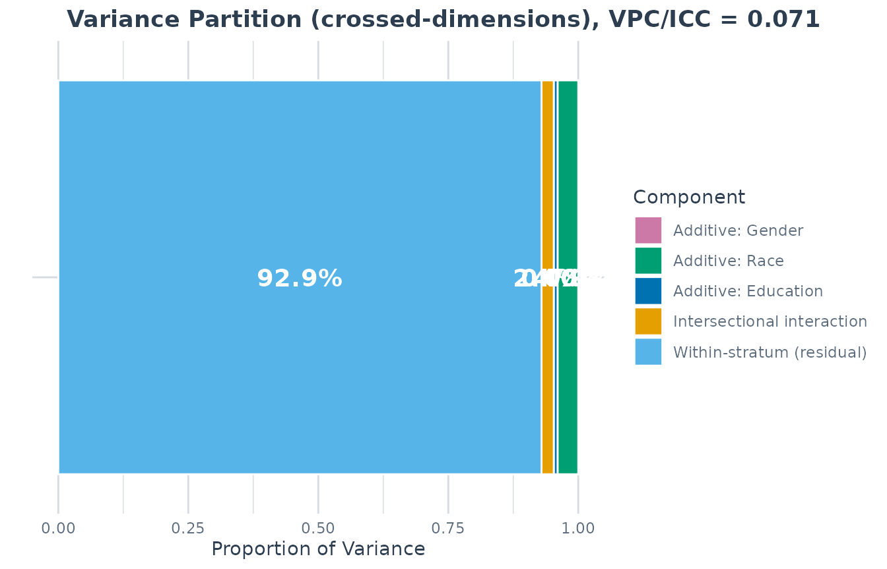
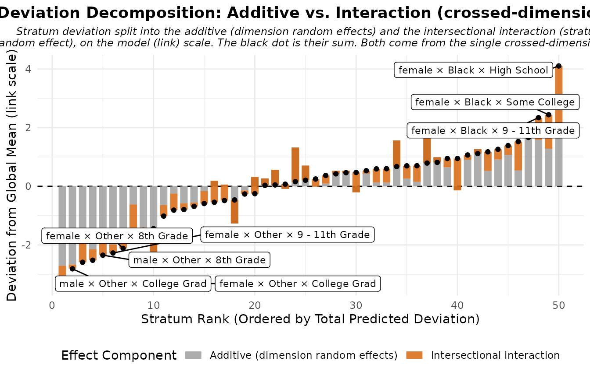
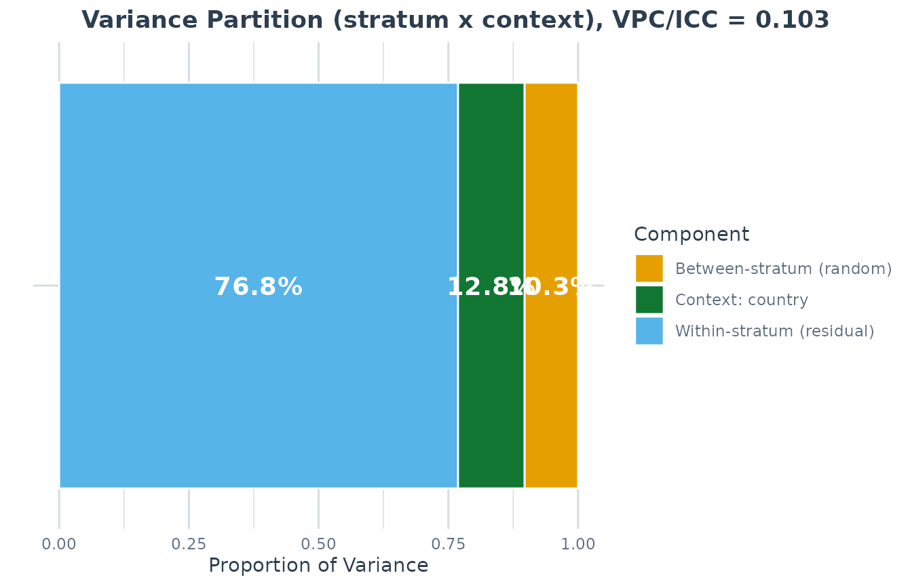
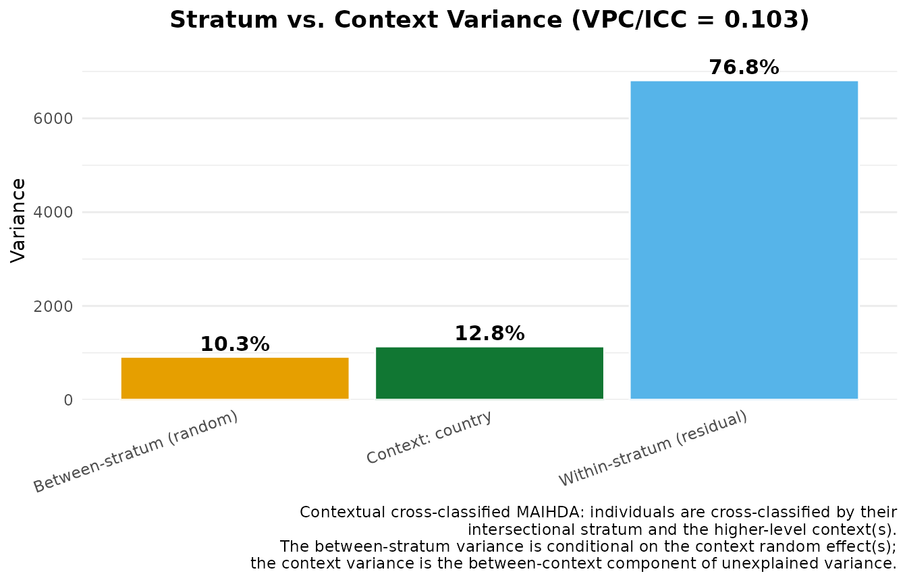

Crossed random effects in MAIHDA: dimensions and contexts
Hamid Bulut
2026-07-01
Source:vignettes/cross_classified.Rmd
cross_classified.RmdTwo different things called “cross-classified”
This vignette covers the two MAIHDA designs that cross the intersectional stratum random effect with other random intercepts, and disentangles two senses of the term “cross-classified” that are easy to confuse:
The crossed-dimensions decomposition (
maihda(decomposition = "crossed-dimensions")): the stratum dimensions’ own main effects enter as random intercepts alongside the intersection, in order to estimate a model-based split of the between-strata variance into additive and interaction parts within a single model.The contextual cross-classified MAIHDA (
context =): individuals are cross-classified by their intersectional stratum and a higher-level place or institution, patients within strata and hospitals, students within strata and schools. This is what the literature usually means by “cross-classified MAIHDA” (e.g. hospital differences in patient survival, or schools crossed with sociodemographic strata in student achievement). It partitions the unexplained variance into between-stratum vs. between-context vs. residual.
The two answer different questions, “how much of the intersectional inequality is more than additive under this model?” vs. “how much of the unexplained clustering is between strata rather than between shared contexts?”, and they compose: you can fit both structures in one model.
Part 1, The crossed-dimensions decomposition
Intersectional MAIHDA asks how much of the unexplained variation in an outcome lies between intersectional strata, and how much of that between-stratum variation can be represented by additive main effects of the constituent dimensions versus intersectional interaction remaining over and above those additive parts.
The package offers two estimators for that split, selected with the
decomposition argument of maihda():
"two-model"(default), the classic approach. Fit a null model and an adjusted model that adds the dimensions’ additive main effects as fixed effects, and use the PCV (the proportional change in between-stratum variance) as the additive-share summary. Seevignette("introduction", package = "MAIHDA").-
"crossed-dimensions", a single model that enters each dimension’s additive main effect as a random intercept:Under this random-effects parameterization, each dimension’s random-effect variance is treated as that dimension’s additive contribution, and the full intersection (
stratum) random-effect variance is the residual interaction beyond additive. The additive and interaction shares are therefore model-implied shares of the between-strata variance from this one fit.
It is fit with ordinary multilevel software, lme4 for a
frequentist fit or brms for a Bayesian one, so it does not
require any special toolchain.
Running a crossed-dimensions analysis
library(MAIHDA)
data("maihda_health_data")
cc <- maihda(
BMI ~ Age + (1 | Gender:Race:Education),
data = maihda_health_data,
decomposition = "crossed-dimensions"
)
#> boundary (singular) fit: see help('isSingular')
cc
#> MAIHDA Analysis
#> ===============
#>
#> Decomposition: crossed-dimensions (single model)
#> Formula: BMI ~ Age + (1 | Gender) + (1 | Race) + (1 | Education) + (1 | stratum)
#> Engine: lme4 | Family: gaussian
#> Fit diagnostics:
#> Singular fit: at least one variance component is estimated at (or near) zero.
#> The between-stratum variance and any VPC/PCV derived from it may be unreliable.
#> Convergence warnings reported by lme4:
#> - boundary (singular) fit: see help('isSingular')
#>
#>
#> VPC/ICC: 0.0707
#>
#> Additive vs. Intersectional Decomposition (crossed-dimensions):
#> Additive (sum of dimension main effects) variance: 2.1996
#> Intersectional interaction variance: 1.1024
#> Total between-strata variance: 3.3020
#> Additive share of between-strata variance: 66.6%
#> Interaction share of between-strata variance: 33.4%
#> Per-dimension additive variance:
#> Gender: 0.0000
#> Race: 1.8589
#> Education: 0.3407
#> Note: the additive share is the crossed-dimensions analogue of the PCV but
#> a different estimator; interpret the interaction share cautiously.
#>
#> Strata: 50
#> Intersectional interactions: 0 of 50 strata flagged (95% interval, BH-adjusted)
#>
#> Use summary() for variance components and plot(type = ...) for figures.
#> maihda() builds the crossed-dimensions model for you
from the intersectional shorthand: it reads the dimensions
(Gender, Race, Education) from
the grouping term, adds one additive random intercept per dimension plus
the intersection random intercept, and fits the single model:
cc$formula
#> BMI ~ Age + (1 | Gender) + (1 | Race) + (1 | Education) + (1 |
#> stratum)
#> <environment: 0x5634b00e1778>The partition is on cc$decomposition (and printed
above):
cc$decomposition$additive_var # sum of the dimension random-effect variances
#> [1] 2.199613
cc$decomposition$interaction_var # the intersection random-effect variance
#> [1] 1.10236
cc$decomposition$additive_share # additive share of the between-strata variance
#> [1] 0.666151
cc$decomposition$interaction_share # the complement: the interaction share
#> [1] 0.333849
cc$decomposition$per_dim # additive variance per dimension
#> Gender Race Education
#> 6.632123e-08 1.858914e+00 3.406986e-01summary() shows the full variance-components table (one
row per dimension, the interaction, and the residual) alongside the
decomposition:
summary(cc$model)
#> MAIHDA Model Summary
#> ====================
#>
#> Fit diagnostics:
#> Singular fit: at least one variance component is estimated at (or near) zero.
#> The between-stratum variance and any VPC/PCV derived from it may be unreliable.
#> Convergence warnings reported by lme4:
#> - boundary (singular) fit: see help('isSingular')
#>
#>
#> Variance Partition Coefficient (VPC/ICC):
#> Estimate: 0.0707
#>
#> Variance Components:
#> component variance sd proportion
#> Additive: Gender 6.632e-08 0.0002575 1.420e-09
#> Additive: Race 1.859e+00 1.3634201 3.981e-02
#> Additive: Education 3.407e-01 0.5836939 7.297e-03
#> Intersectional interaction 1.102e+00 1.0499335 2.361e-02
#> Within-stratum (residual) 4.339e+01 6.5871467 9.293e-01
#> Total 4.669e+01 6.8331892 1.000e+00
#>
#> Additive vs. Intersectional Decomposition (crossed-dimensions):
#> Additive (sum of dimension main effects) variance: 2.1996
#> Intersectional interaction variance: 1.1024
#> Total between-strata variance: 3.3020
#> Additive share of between-strata variance: 66.6%
#> Interaction share of between-strata variance: 33.4%
#> Per-dimension additive variance:
#> Gender: 0.0000
#> Race: 1.8589
#> Education: 0.3407
#> Note: the additive share is the crossed-dimensions analogue of the PCV but
#> a different estimator; interpret the interaction share cautiously.
#>
#> Fixed Effects:
#> term estimate
#> (Intercept) 28.18811
#> Age 0.01508
#>
#> Stratum Estimates (first 10):
#> stratum stratum_id label random_effect se
#> 1 1 male × Hispanic × Some College -0.12058 0.8578
#> 2 2 male × Black × College Grad 0.16241 0.8783
#> 3 3 female × White × College Grad -1.13921 0.5571
#> 4 4 male × Hispanic × 8th Grade 0.46491 0.9478
#> 5 5 female × Mexican × 8th Grade 0.98670 0.8241
#> 6 6 male × White × College Grad -0.13330 0.5588
#> 7 7 female × White × High School -0.50071 0.5816
#> 8 8 male × White × Some College 1.08841 0.5517
#> 9 9 female × White × 9 - 11th Grade 0.55145 0.6631
#> 10 10 female × Hispanic × High School -0.06806 0.8681
#> lower_95 upper_95
#> -1.80195 1.56079
#> -1.55907 1.88389
#> -2.23108 -0.04735
#> -1.39286 2.32269
#> -0.62859 2.60200
#> -1.22856 0.96195
#> -1.64070 0.63928
#> 0.00712 2.16969
#> -0.74820 1.85110
#> -1.76951 1.63340
#> ... and 40 more strataFigures
The variance-partition and decomposition figures are aware of the crossed-dimensions structure: the VPC plot shows one additive slice per dimension plus the interaction and residual, and the deviation decomposition splits each stratum’s deviation into its additive (dimension random effects) and interaction (intersection random effect) parts.
plot(cc, type = "vpc") # per-dimension additive + interaction + residual
plot(cc, type = "effect_decomp") # additive vs. interaction, per stratum
Comparing across a higher-level group
Pass a group to decompose within each level of a
higher-level variable, here, how the additive-vs-interaction split
differs across countries in the PISA data:
data("maihda_country_data")
cc_grp <- maihda(
math ~ 1 + (1 | gender:ses),
data = maihda_country_data,
group = "country",
decomposition = "crossed-dimensions"
)
plot(cc_grp, type = "group_additive_share") # additive share by country
plot(cc_grp, type = "group_components") # additive / interaction / residualA Bayesian fit
Set engine = "brms" for a Bayesian crossed-dimensions
fit; the additive and interaction shares then carry posterior credible
intervals (no bootstrap needed). This is the recommended engine when
dimensions have few levels (see the caveats below).
cc_b <- maihda(
BMI ~ Age + (1 | Gender:Race:Education),
data = maihda_health_data,
engine = "brms",
decomposition = "crossed-dimensions"
)
cc_b$decomposition$additive_share_ciTwo important caveats
The additive share is not the PCV. The two-model PCV and the crossed-dimensions additive share target the same broad question, how much of the between-strata variance is additive, but with different estimators (fixed main effects across two models vs. a single model’s random main-effect variances, which are partially pooled). They may be directionally similar, but they need not be numerically close; do not treat one as a validation check for the other.
Few-level dimensions are poorly identified. A dimension’s additive variance is estimated from its handful of levels. A binary dimension (e.g. a two-level sex variable) contributes a variance estimated from just two groups, so
lme4may estimate one or more variance components at or near zero (a singular fit). This makes the additive and interaction shares unstable. Watch for the singular-fit note in the output, and considerengine = "brms"with explicit prior sensitivity checks when dimensions are few-levelled.
Part 2, Contextual cross-classified MAIHDA
(context =)
People do not only belong to intersectional strata; they are also clustered in places and institutions, hospitals, schools, neighbourhoods, countries. When the context matters for the outcome, a strata-only MAIHDA can conflate stratum and context variation, especially when strata are unevenly distributed across contexts. The contextual cross-classified MAIHDA fits both levels jointly, crossed:
and partitions the unexplained variance into
- between-stratum, the intersectional clustering net of the shared context (the headline VPC/ICC),
- between-context, the general contextual effect of the place/institution, and
- residual, within-stratum, within-context individual heterogeneity.
Pass the context column(s) via context =; everything
else is unchanged:
data("maihda_country_data")
ctx <- fit_maihda(
math ~ 1 + (1 | gender:ses),
data = maihda_country_data,
context = "country"
)
summary(ctx)
#> MAIHDA Model Summary
#> ====================
#>
#> Variance Partition Coefficient (VPC/ICC):
#> Estimate: 0.1032
#>
#> Variance Components:
#> component variance sd proportion
#> Between-stratum (random) 915.2 30.25 0.1032
#> Context: country 1137.1 33.72 0.1283
#> Within-stratum (residual) 6813.0 82.54 0.7685
#> Total 8865.3 94.16 1.0000
#>
#> Contextual Cross-Classified Partition (stratum x context):
#> Between-stratum (intersectional) variance: 915.2323 (share 10.3%)
#> Context 'country' variance: 1137.1067 (share 12.8%)
#> Note: the headline VPC/ICC is the between-stratum share conditional on
#> the context random effect(s). The context share is the between-context
#> component of the unexplained variance.
#>
#> Fixed Effects:
#> term estimate
#> (Intercept) 492.3
#>
#> Stratum Estimates (first 10):
#> stratum stratum_id label random_effect se lower_95 upper_95
#> 1 1 male × Medium 7.404 9.689 -11.59 26.396
#> 2 2 female × Medium -7.027 9.740 -26.12 12.063
#> 3 3 female × High 30.825 9.729 11.76 49.894
#> 4 4 male × Low -28.600 9.741 -47.69 -9.508
#> 5 5 female × Low -37.651 9.724 -56.71 -18.592
#> 6 6 male × High 35.048 9.713 16.01 54.085The headline VPC/ICC is now the between-stratum share conditional on the country random intercept: in these data it drops noticeably relative to the strata-only fit, consistent with some country-level clustering or composition being separated from the stratum component. The country share is the general contextual effect.
# Strata-only fit for comparison: its VPC may partly reflect country clustering.
m0 <- fit_maihda(math ~ 1 + (1 | gender:ses), data = maihda_country_data)
summary(m0)$vpc$estimate # strata-only VPC
#> [1] 0.1493031
s <- summary(ctx)
s$vpc$estimate # between-stratum share conditional on country
#> [1] 0.1032371
s$context$vpc_context_total # the country (general contextual) share
#> [1] 0.1282643With the full maihda() workflow
maihda(context = ) carries the context random intercept
through both the null and the adjusted model, so the PCV decomposition
is computed with the context partialled out:
a <- maihda(
math ~ 1 + (1 | gender:ses),
data = maihda_country_data,
context = "country"
)
#> maihda(): added the additive main effect(s) of the stratum dimension(s) gender, ses to the adjusted model; the null model excludes them. List them in the formula to specify the adjusted model explicitly.
a
#> MAIHDA Analysis
#> ===============
#>
#> Null formula: math ~ (1 | stratum) + (1 | country)
#> Adjusted formula:math ~ (1 | stratum) + (1 | country) + gender + ses
#> Engine: lme4 | Family: gaussian
#> Context: country (crossed contextual random intercept in the null and adjusted models)
#> VPC/ICC (null): 0.1032
#> Context share (null): 0.1283 (between-country share of unexplained variance)
#> PCV (null -> adjusted): 1.0000
#> Between-stratum variance: 838.3719 (null) -> 0.0000 (adjusted)
#> ~100.0% of the between-stratum variance is additive (the dimensions' main
#> effects); the remainder is the between-stratum variance remaining after the
#> additive main effects -- a model-dependent quantity
#> Strata: 6
#> Intersectional interactions: 0 of 6 strata flagged (95% interval, BH-adjusted)
#>
#> Use summary() for variance components and plot(type = ...) for figures.
#>
plot(a, type = "vpc") # stacked shares, with the context broken out
plot(a, type = "context_vpc") # stratum vs. context variances side by side
context also composes with the crossed-dimensions
decomposition
(maihda(..., decomposition = "crossed-dimensions", context = "country")):
the single fit then carries the dimension, intersection, and context
random intercepts, and the context variance enters the VPC
denominator.
context = vs. group =
Both bring in a higher-level variable, but they are different designs:
group = "country" |
context = "country" |
|
|---|---|---|
| Models fitted | One independent model per country | One joint model, strata crossed with country |
| Question | Does intersectional inequality differ across countries? | How much unexplained variance is between strata vs. between countries? |
| Country effect | Handled by stratification; not estimated as a variance component | Estimated as a variance component |
| Strata | Same definitions, separate estimates per country | One set of stratum effects, pooled across countries |
Because they answer different questions, maihda() errors
if you supply both.
Notes
- Few context levels identify the context variance weakly. The
maihda_country_dataexample has only 6 countries resulting in imprecise estimates andlme4may fit it singular. Prefer many-level contexts, orengine = "brms", whose priors regularise the variance. - A manually written
+ (1 | school)in the formula fits the same model, but is summarised generically as “Other random effects”. Onlycontext =activates the labelled stratum-vs-context partition.